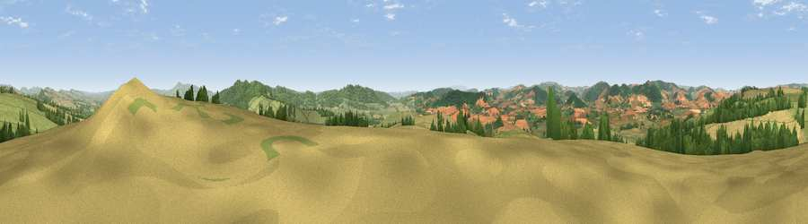

Viewpoint near Leintwardine
#3198 in England · top 8% of its area beats it · near LeintwardineWhere it is
The exact computed spot (SO 42200 74875). Click the marker for map links.
The view, rendered

A 360° render of this exact spot computed from the terrain model, tree cover and land cover — summer colours, afternoon light, calibrated against photographs of famous viewpoints. Real trees, hedges and buildings will differ in detail.
The panorama
Grey silhouette: terrain skyline in each direction (720 bearings, Earth curvature and refraction included). Dashed green: skyline with trees (+15 m) and buildings (+8 m) as obstacles. Blue strip: how far the ground is visible on each bearing.
Where the view opens
Wedge length = distance to the farthest visible ground on that bearing (vegetation-aware). Rings at 10, 25 and 50 km.
What fills the view
41% grassland · 34% cropland · 24% woodland
Angular shares of the visible panorama (visual magnitude), not map area. Landscape diversity 0.48 (0–1 Shannon).
Key numbers
More beautiful places nearby
The staircase of upgrades: each row has a higher view potential than everything closer. Driving times are estimates from straight-line distance, calibrated against real road routing — check an actual route before setting out.
| Place | Direction | Drive | Score |
|---|---|---|---|
| Viewpoint near Pipe Aston | ESE · 4 km | ~9 min | 81.9 |
| Bringewood Hill | ESE · 5 km | ~11 min | 82.2 |
| Gatley Hill | SSE · 6 km | ~13 min | 82.6 |
| Viewpoint near Asterton | NNW · 14 km | ~26 min | 83.0 |
| Titterstone Clee | E · 17 km | ~30 min | 83.8 |
| The Lawley | NNE · 24 km | ~39 min | 85.8 |
| Viewpoint near Little Wenlock | NNE · 39 km | ~58 min | 86.6 |
| North Hill | SE · 45 km | ~65 min | 86.8 |
52.36886, -2.85035 · source: screening · position refined by local search. Computed location — check access rights before visiting.